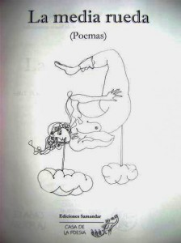
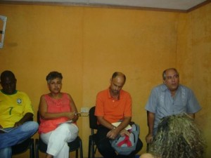

Alberto Marrero,
24 Décembre de 2013.

Seis poetas arribaron a los cincuenta años de vida: Antonio Armenteros, Charité Atencio, Carlos Augusto Alfonso, Alpidio Alonso-Grau, Ricardo Alberto Pérez (lamentamos su ausencia por razones de fuerza mayor) y Carmen González. La Casa de la Poesía y la revista Amnios decidieron organizarles un homenaje en la sede de esta última. Fue a las cuatro de la tarde del lunes 23 de diciembre y en la estrecha salita se congregó un público de amigos y otros habituales de la tertulia Amor de ciudad grande y de otras actividades que allí se realizan cada mes.. El encuentro comenzó con las palabras de la poeta Teresita Fornaris. Ella explicó brevemente la idea de agasajar, con una lectura, al grupo de poetas, cuya obra ha enriquecido la cultura de nuestro país. Como regalo de la Casa de la Poesía que ella dirige, trajo una edición artesanal de poemas de los homenajeados. La selección se titula, no por azar, La media rueda, fue obsequiada a los presentes que la recibieron con agrado. A continuación se inició la lectura de los poetas. Mirándolos de conjunto, avisté la polifonía de nuestro espectro poético, las búsquedas diferentes y, C'est pourquoi, los resultados también diferentes. Ninguno se parece al otro. Ninguno imita al otro. Cada cual asume la poesía, o la realidad de la poesía, o su misterio, desde su punto de vista, con sus credos y visiones muy personales. Eso alivia y reconforta. Lo homogéneo aburre y embota, la diversidad nos salva del dogma y el maniqueísmo.De su poemario Casa Quebec Tony Armenteros (un físico nuclear devenido felizmente poeta y narrador) declamó versos de un lirismo ora extasiado, ora de una sensibilidad desconcertante. Entre la expectativa y el fin nos detuvimos, dijo en uno de los poemas, y en otro no menos poroso: En el mantel de la madre se avizoran sendas / lugares comunes que nos circundan. Terminó con un poema dedicado a su abuela, una persona primordial en su vida, que vigilaba sus travesuras en la Calle Atocha, en pleno Cerro, desde una inteligencia natural que en cierta medida contribuyó a forjar el espíritu del poeta: Una mujer muerde el pobre amor en otro amor, / y será por último otra palabra, concluye Tony.
A continuación le correspondió el turno a Caridad Atencio, una poeta que además es investigadora y sagaz ensayista de temas martianos. Antes de comenzar a leer sus poemas dijo haber conocido a los poetas presentes gracias a la poesía. De otra manera a lo mejor no nos hubiésemos relacionado, dit (una vez me contó de su extrema timidez en una época que la llevaba a prolongados silencios). Después de estas palabras leyó poemas de su premiado cuaderno El libro de los sentidos y otros inéditos. Los que conocen su poesía anterior comprenden que Caridad se mueve ahora en una cuerda aparentemente distinta que, pour moi, no es ruptura a secas sino evolución hacia una claridad lirica de continuadas resonancias filosóficas y humanas. Sin renunciar a sus hallazgos, Caridad no deja de avanzar hacia un lenguaje cada vez más decantado, casi perfecto. Con una cuchilla raspan tu ide

ntidad. La idea se mueve como hierro desaceitado. Descubres una voz a tu nombre, ¨en medio del más delicado baño de sangre¨, un secreto dentro de un secreto, lee. Y más adelante nos regala un hermoso poema dedicado a su hija: Hija / si el corazón / tiene rostro / un árbol amarillo / solo / en la floresta / soy / iluminándote.Carlos Augusto Alfonso es un poeta sumamente explorador, inquieto, amante de la historia, la filosofía, el arte y de todo aquel saber humano que pueda nutrir su poesía; un alquimista que sabe lo que hace con sus probetas y busca el oro del lenguaje, a través de un serio entramado de sugerencias y asociaciones. Lejos de lo que afirman algunos críticos sobre su transgresión de las normas vigentes, debajo de lo que escribe fluye la tradición, cómo no, y de la buena, solo que llevada hacia límites ignorados. Carlos leyó poemas impactantes como el titulado Sequoya: Para jefe cheroquee: Sequoya. / Para etnia amazónica: Aldo pai. / El sol, poste enganche cobra sentido / para los mamposteros pachacuti…Y luego otro de igual o superior relevancia titulado Dalits: En pueblos endómagos, en los pasatiempos de la Casa de Laca, / los poetas no son lo sacerdotes que nacen de la boca de Brahma. / No salen de sus mano al abdomen./ No aparecen echados a los pies de Brahma./ Ni políticos graves, ni rectos militares, / nos son los comerciantes artesanos / que la larga se saben quemadores de etapas.
Alpidio Alonso-Grau nos deleitó con Poema de la infidelidad, Ikebana y Manchega, pertenecientes a diferentes cuadernos. En el primero cada palabra registra, como un sismógrafo, douleur, la indefensión ante ciertos momentos de la existencia, el aliento de un breve desastre: Una casa y su eterna contraseña con el hombre. /Una casa como la tierra prometida./ Que anticipaba su círculo de odio en las paredes. Y más adelante, haciendo uso de una fuerza lirica realmente conmovedora y a la vez reflexiva leyó: Una casa ocurre en la rabia, nos esgrime,/en el poema ocurre;/su cuerda de miedo apuntalada en el desastre, /acontecida en la escasez, /varada en su espiral de altos precios. Poeta de mirada íntima y agudeza refinada, de sobriedad no pocas veces aforística, con un alto sentido del ritmo y la armonía, los poemas que leyó a continuación son una muestra de este empeño. En Ikebana, par exemple, dit: Hay un grado de flor /que no conoce límite./No es /color ni fragancia./Alude nombres /impronunciables,/soles que te rondan, /hambres,/ténèbres.
Enfin, Carmen González nos sorprendió gratamente a todos con varios poemas declamados de memoria, de pie y actuando con absoluta naturalidad. Intercaló canciones, pregones, onomatopeyas, bailes, gestos que reforzaban sus palabras, ritmo de palmadas, mirada alegre o iracunda según el texto. En fin, nos sorprendió lo que tal vez no debería sorprendernos si la tradición de la oralidad no fuera un acto exótico en algunos espacios, o mejor, entre algunos de nosotros. Cependant, ella brilló con luz inusitada y al final de uno de los poemas expresó: Respirar es un ejercicio difícil y lo repitió varias veces logrando un efecto imborrable.
Así se homenajeó a un grupo de poetas que cumplieron la media rueda de una existencia fecunda. Así escuchamos la buena poesía que nunca ha dejado de escribirse en Cuba y levantamos el alma. Luego llegó un brindis y no pocas explosiones de risa. La intimidad de la penumbra de un patio nos permitió dialogar, intercambiar noticias de lecturas, revelarnos angustias y esperanzas y, al término de la velada, abrazarnos con la promesa de nuevos encuentros.
[palabralink] Charité Atencio. 1963, La Havane, Cuba.
Charité Atencio. 1963, La Havane, Cuba.
Poète, ensayista e investigadora. Posee diversas publicaciones como los poemarios Los poemas desnudos del año 1995, el libro de ensayo Recepción de Versos sencillos: poesía del metatexto en el año 2000. Integra el Consejo Científico del Centro de Estudios Martianos.[/palabralink]
[palabralink] Teresa Fornaris (La Havane, 1971)
Teresa Fornaris (La Havane, 1971)
Poeta y escritora.
Graduada de Ingeniería Química, es miembro de la UNEAC y de la Asociación Hermanos Saíz. Trabaja actualmente como especialista principal en el departamento de Creación del Centro Cultural Dulce María Loynaz.[/palabralink]
[palabralink] Ricardo Alberto Pérez. (La Havane, 1963)
Ricardo Alberto Pérez. (La Havane, 1963)
Escritor cubano. Ha publicado varios poemarios y antologías de poesía cubana y brasileña. Posee una rica trayectoria, con premios importantes, como el Premio Nacional de Poesía Nicolás Guillén 2007.[/palabralink]